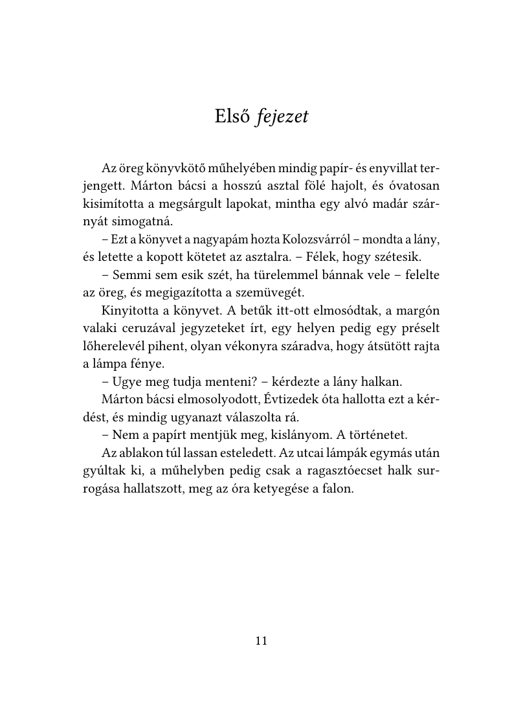

From bad scans to beautiful books
Lefotózott, ferde, árnyékos könyvoldalakból valódi, kereshető, könyvszerűen szedett PDF – az eredeti sortörésekkel, bekezdésekkel és oldaltörésekkel.

Előtte: telefonfotó Utána: SCAN2BOOKHúzd a csúszkát! Görbe lap, gerincárnyék, sárgult papír → tiszta, sorkizárt, kereshető oldal.
Úgy néz ki, mint egy igazi könyv
Nem egyszerű szövegfelismerés: a SCAN2BOOK az eredeti oldal szerkezetét is visszaépíti.
Kiegyenesíti a lapot
A hajlott, ferde, gerincnél görbülő sorokat felismerés előtt kisimítja.
Megtartja a tördelést
Sortörések, elválasztások, bekezdés-behúzások, párbeszédek – pontosan az eredeti szerint, sorkizárva.
Címek és dőlt betűk
Felismeri a nagyobb, középre zárt fejezetcímeket és a dőlt szavakat.
Ábrák is
Rajzokat, díszeket kivág, megtisztít és az eredeti helyükre teszi.
Oldalszámok rendben
Minden eredeti oldalból egy oldal lesz; a félreolvasott oldalszámokat a sorozatból javítja.
Gyors és offline
Egy 60 oldalas könyv kb. fél–egy perc. Minden a gépeden történik, semmi nem megy fel az internetre.
Három lépés
Telefonnal vagy szkennerrel készült PDF-ből indul, és könyvet ad vissza.
- Válaszd ki a PDF-etA lefotózott vagy beszkennelt könyvoldalakat (pl. Adobe Scan, telefonos szkenner).
- Indítsd elBetűtípus, betűméret, oldaltartomány – vagy hagyd az alapbeállításokat.
- OlvasdKész a szép, kereshető, másolható szövegű PDF – bármilyen olvasón vagy e-könyv-olvasón.
Telepítés
Az app ingyenes, ezért nincs fizetős Microsoft/Apple tanúsítvánnyal aláírva – első indításnál egyszer engedélyezni kell.
Windows 10/11
Futtasd a SCAN2BOOK-…-setup.exe-t. Ha megjelenik a „A Windows megvédte a számítógépet” ablak: További információ → Futtatás mindenképp. Telepítés nélkül: hordozható ZIP.
macOS (Apple Silicon)
Nyisd meg a DMG-t, és húzd a SCAN2BOOK-ot az Alkalmazások mappába. Első indításkor: jobb klikk → Megnyitás, vagy Rendszerbeállítások → Adatvédelem és biztonság → Megnyitás mégis.